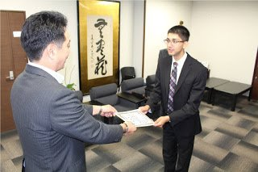

ZenIT Talk @ UC Berkeley
ZenIT: Mindful Work through Zen Meditation and Collaboration
In this session, Amil Khanzada, former UC Berkeley Computer Science alumnus now appointed as Evolution Ambassador of Eiheiji Town in Japan, will talk about ZenIT, a new movement to define a style of working that is highly productive *and* peaceful, by combining Japanese Soto Zen meditation and Silicon Valley software development pairing/collaboration principles.
The movement is based in Eiheiji Town, which sits in the happiest region of Japan and houses the head temple for Soto Zen with over 15,000 temples worldwide.
The ZenIT team will be running a free pilot program in Japan until March 2019, so we are looking for:
- software developers interested in joining the pilot
- students interested in writing a research paper (increase productivity, mindfulness, well-being, happiness, etc.)
Date/Time
Friday, November 9th, 4-5pm
Location
UC Berkeley campus, Berkeley, California
370 Dwinelle
Collaboration
UC Berkeley Japanese Department
http://events.berkeley.edu/index.php/calendar/sn/eecs.html?event_ID=121434
Speaker
Amil Khanzada
Founder of ZenIT
One Young World 2018 Fukui delegate (profile)
UC Berkeley Computer Science 2012 graduate (profile)
Silicon Valley developer (experience)
